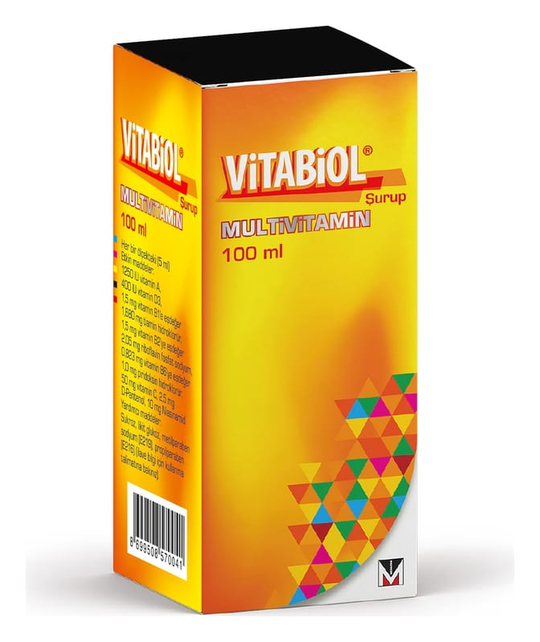

Vitabiol Şurup, 100 ml

Ne için kullanılır
KT · Bölüm 1VİTABİOL, kıvamlı, portakal esansı kokulu, sarı renkli çözelti şeklinde bir üründür. Vücut için gerekli olan bazı vitaminleri içermektedir. VİTABİOL şurup; içeriğindeki vitaminlerin eksikliğinin görüldüğü veya gereksiniminin arttığı durumlarda eksikliğin giderilmesinde kullanılır. Şu durumlarda takviye gerekebilir: - Ani kilo kaybı, dengesiz ve yetersiz beslenme, günlük vitamin ihtiyacını karşılamayan diyetler (örn., süt alımının olmadığı vejeteryan diyetler), - Ağız-boğaz hasarları/bozuklukları, sarılık, - Yanıklar, ateş, kronik ateş, kronik hemodiyaliz (kanın temizlenmesi işlemi), karaciğer-safra kanalı hastalıkları, hipertiroidizm (tiroid bezinin fazla çalışması,
belirtileri; metabolizmada hızlanma, kilo kaybı, terleme, güçsüzlük), uzamış hastalıklar/enfeksiyonlar, barsak hastalıkları, pankreas yetersizliğine bağlı olarak besinlerin yetersiz emilimi, protein eksikliği, yağ emiliminin bozulduğu durumlar